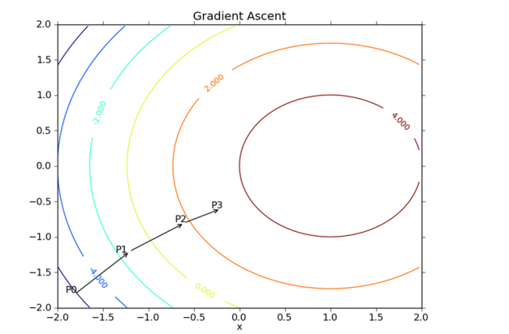
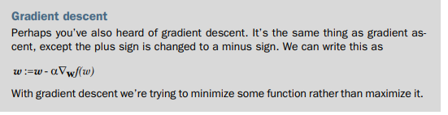
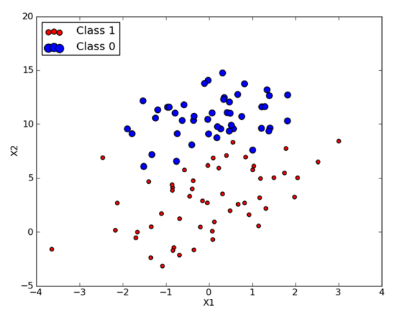

<!DOCTYPE html>
<html>
<head>
	<title>logistic regression
       </title>
	<link rel="stylesheet" href="https://cdn.jsdelivr.net/npm/bootstrap@4.0.0/dist/css/bootstrap.min.css" integrity="sha384-Gn5384xqQ1aoWXA+058RXPxPg6fy4IWvTNh0E263XmFcJlSAwiGgFAW/dAiS6JXm" crossorigin="anonymous">
    <script src="https://cdnjs.cloudflare.com/ajax/libs/prism/9000.0.1/prism.min.js" integrity="sha512-UOoJElONeUNzQbbKQbjldDf9MwOHqxNz49NNJJ1d90yp+X9edsHyJoAs6O4K19CZGaIdjI5ohK+O2y5lBTW6uQ==" crossorigin="anonymous" referrerpolicy="no-referrer"></script>
	<script src="https://cdnjs.cloudflare.com/ajax/libs/prism/9000.0.1/components/prism-actionscript.min.js" integrity="sha512-YSZLJbdXeh9n0X0aJAuJUk8ArMBEu1F0LQPeiydyVXUMlJ2QZPAFzp/84lkxk9M0NpTJ5aSEUTlbsC4UoUpwYw==" crossorigin="anonymous" referrerpolicy="no-referrer"></script>
    <script src="https://polyfill.io/v3/polyfill.min.js?features=es6"></script>
    <script id="MathJax-script" async src="https://cdn.jsdelivr.net/npm/mathjax@3/es5/tex-mml-chtml.js"></script>
  
    <link rel="stylesheet" href="https://cdnjs.cloudflare.com/ajax/libs/prism-themes/1.9.0/prism-a11y-dark.min.css" integrity="sha512-bd1K4DEquIavX49RSZHIE0Ye6RFOVlGLhtGow9KDbLYqOd/ufhshkP0GoJoVR1jqj7FmOffvVIKuq1tcXlN9ZA==" crossorigin="anonymous" referrerpolicy="no-referrer" />
    
    <link rel="stylesheet" href="style.css">
	<style>
		body {
			font-family: Arial, sans-serif;
			padding: 20px;
			max-width: 800px;
			margin: 0 auto;
		}
		h1 {
			font-size: 36px;
			margin-bottom: 20px;
		}
        .note {
            background-color: #fff;
            padding: 20px;
            border-radius: 8px;
            box-shadow: 0 2px 4px rgba(0, 0, 0, 0.1);
            text-align: center;
        }
		h2 {
			font-size: 28px;
			margin-top: 40px;
			margin-bottom: 10px;
		}
		p {
			font-size: 16px;
			line-height: 1.5;
			margin-bottom: 20px;
		}
		img {
			max-width: 100%;
			margin-bottom: 20px;
		}
	</style>
</head>
<body>
	<header>
		
		<h1> logistic regression
           </h1>
		<p>Posted on JUNE 15, 2022 by Zulqarnain</p>
	</header>
	
	<main>
		<section>
			<h2>Introduction</h2>
            What happens in logistic regression is we have a bunch of data, and with the data we try to build an equation to do classification for us. The exact math behind
            this you’ll see in the next part of the book, but the regression aspects means that we
            try to find a best-fit set of parameters. Finding the best fit is similar to regression, and
            in this method it’s how we train our classifier. We’ll use optimization algorithms to
            find these best-fit parameters. This best-fit stuff is where the name regression comes
            from. We’ll talk about the math behind making this a classifier that puts out one of
            two values

    </section>
    <section>
        <p>
            General approach to logistic regression
<li>1. Collect: Any method.</li>
<li>2. Prepare: Numeric values are needed for a distance calculation. A structured data
format is best.</li>
<li>3. Analyze: Any method.</li>
<li>4. Train: We’ll spend most of the time training, where we try to find optimal coefficients to classify.</li>
<li>    5. Test: Classification is quick and easy once the training step is done.
</li>
  <li>  6. Use: This application needs to get some input data and output structured numeric values. Next, the application applies the simple regression calculation on
this input data and determines which class the input data should belong to.</li>
The application then takes some action on the calculated class
        </p>
    </section>
		

    
    <section>
        <h1>
            Using optimization to find the best regression coefficients
            <p> \( z = w_0 x_0 + w_1 x_1 + w_2 x_2 + \ldots + w_n x_n \) </p>        </p>
            <p>The input to the sigmoid function described will be \( z \), where \( z \) is given by the following:</p>
            <p>In vector notation we can write this as \( z = w^T x \). All that means is that we have two vectors of numbers and we’ll multiply each element and add them up to get one number. The vector \( x \) is our input data, and we want to find the best coefficients \( w \), so that this classifier will be as successful as possible. In order to do that, we need to consider some ideas from optimization theory.</p>
          
        </h1>
        <p>
            We’ll first look at optimization with gradient ascent. We’ll then see how we can use
this method of optimization to find the best parameters to model our dataset. Next,
we’ll show how to plot the decision boundary generated with gradient ascent. This will
help you visualize the successfulness of gradient ascent. Next, you’ll learn about stochastic gradient ascent and how to make modifications to yield better results.
        </p>
    </section>
    <section>
        <h3> Gradient ascent</h3>
        <p>
            The first optimization algorithm we’re going to look at is called gradient ascent. Gradient ascent is based on the idea that if we want to find the maximum point on a function, then the best way to move is in the direction of the gradient. We write the gradient
with the symbol and the gradient of a function f(x,y) is given by the equation
        </p>
        <p>  \( \nabla f(x, y) = \frac{\partial f(x, y)}{\partial x} \frac{\partial f(x, y)}{\partial y} \) </p>
    </p>
    <p>
        This is one of the aspects of machine learning that can be confusing. The math isn’t
difficult. You just need to keep track of what symbols mean. So this gradient means
that we’ll move in the x direction by amount and in the y direction by amount
. The function f(x,y) needs to be defined and differentiable around the points
where it’s being evaluated
    </p>
    
    </section>
    <section>
        <p>The gradient ascent algorithm moves in the direction of the gradient evaluated at 
            each point. Starting with point P0, the gradient is evaluated and the function moves to the 
            next point, P1. The gradient is then reevaluated at P1, and the function moves to P2. This 
            cycle repeats until a stopping condition is met. The gradient operator always ensures that we’re 
            moving in the best possible direction.</p>
    
        </section>
        <section>
            <p>
                Let’s put this into action on our logistic regression classifier and some Python. First,
we need a dataset.
            </p>
            <strong>
                Our simple dataset. We’re going to attempt to use gradient descent to find the best weights 
for a logistic regression classifier on this dataset.
            </strong>
            
        </section>
        <p>
            
 <pre>
    <code class="language-javascript">
            """"
            def loadDataSet():
                dataMat = []; labelMat = []
                fr = open('testSet.txt')
                for line in fr.readlines():
                lineArr = line.strip().split()
                dataMat.append([1.0, float(lineArr[0]), float(lineArr[1])])
                labelMat.append(int(lineArr[2]))
                return dataMat,labelMat
           def sigmoid(inX):
             return 1.0/(1+exp(-inX))
           def gradAscent(dataMatIn, classLabels):
                dataMatrix = mat(dataMatIn) 
                labelMat = mat(classLabels).transpose() 
                m,n = shape(dataMatrix)
                alpha = 0.001
                maxCycles = 500
                weights = ones((n,1))
                for k in range(maxCycles): 
                h = sigmoid(dataMatrix*weights) 
                error = (labelMat - h) 
                weights = weights + alpha * dataMatrix.transpose()* error 
                return weights
    </code>
    </pre>
        </p>
<section>
    <p>The real work is done in the function gradAscent(), which takes two inputs. The
        first input, dataMatIn, is a 2D NumPy array, where the columns are the different features and the rows are the different training examples. Our example data has two
        features plus the 0th feature and 100 examples, so it will be a 100x3 matrix. In B you
        take the input arrays and convert them to NumPy matrices. This is the first time in this
        book where you’re using NumPy matrices, and if you’re not familiar with matrix math,
        then some calculations can seem strange. <br> NumPy can operate on both 2D arrays and
        matrices, and the results will be different if you assume the wrong data type. Please see
        appendix A for an introduction to NumPy matrices. The input classLabels is a 1x100
        row vector, and for the matrix math to work, you need it to be a column vector, so you
        take the transpose of it and assign that to the variable labelMat. Next, you get the size
        of the matrix and set some parameters for our gradient ascent algorithm. </p>
</section>
    </main>
    
</body>
</html>